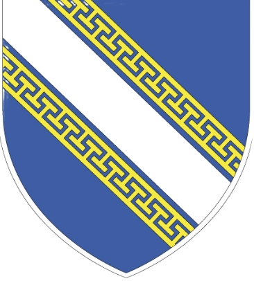
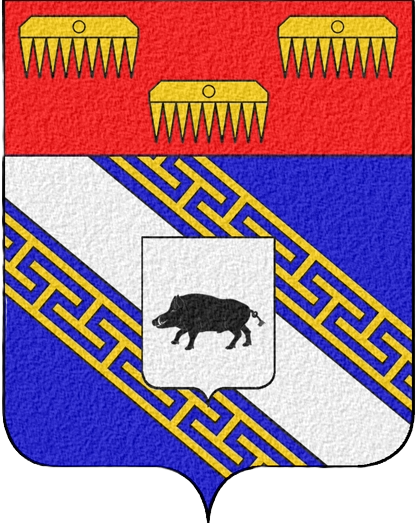
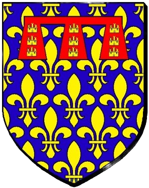

Les champs de bataille



Au fil de leurs parcours de guerre, les trois frères vont découvrir des paysages de campagne très différents de leur pays des Combrailles. La terre riche et lourde des champs d’Artois, la terre pauvre et crayeuse des plaines de Champagne et Ardennes, le sol humide et limoneux de la Somme, les forêts de sapins des Vosges …
Là où les états-majors voient des champs de bataille, Gabriel, Auguste et Antoine voient des champs de betteraves, des champs de blé, des prairies de luzerne et des pâtures …
Ils ont dû souffrir de voir ces terres meurtries et évincées par les obus. Mais au moins avaient-ils la consolation de savoir que leur coin de Combrailles était loin du front et préservé de cette folie.
Bien des années plus tard, les paysages de guerre sont redevenus des paysages de campagne mais comme en témoigne ce court métrage avec un paysan de l’Aisne, les cicatrices du passé sont encore là. Et le sol n’en finit pas de rejeter ces vestiges du passé …
Il est un champ de bataille où les hommes détruisirent complètement le paysage, n’y laissant que boue, cendre et bois mort : Verdun. C’est le Verdun que connurent Gabriel et Auguste.
Là encore le temps a fait son œuvre et la vie a repris le dessus … mais cliquez sur l'image et regardez ce reportage qui juxtapose les paysages de Verdun en 1916 avec ceux d’aujourd’hui.
Des Sillons aux Tranchées